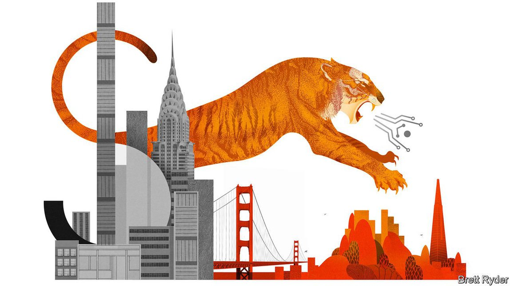

2021-07-31T12:28:43+00:00
Schumpeter
熊彼特
熊彼特
How Tiger Global is changing Silicon Valley
老虎环球基金如何改变硅谷
老虎環球基金如何改變硅谷
The impact of the hyperactive New York hedge fund will be more profound than that of deep-pocketed tourists such as SoftBank
这个超级活跃的纽约对冲基金将比软银等财力雄厚的“观光客”影响更深远
這個超級活躍的紐約對沖基金將比軟銀等財力雄厚的“觀光客”影響更深遠
A FEW YEARS ago SoftBank rewrote the rules of venture capital (VC). The Japanese tech conglomerate was handing out cash left and right to startup founders. Leading venture capitalists held conferences to discuss how their industry could survive the SoftBank onslaught. As some of SoftBank’s biggest investments unravelled, culminating in the collapse in September 2019 of the initial public offering (IPO) of WeWork, an office-sharing firm, Valley veterans gloated. It seemed to be just another “tourist investor”, as one VC luminary dubs those who occasionally traipse through Silicon Valley looking to pick up sexy startups.
几年前，软银改写了风险投资的规则。这家日本科技企业集团到处向创业公司的创始人投钱。龙头风投公司纷纷召开会议，讨论他们的行业如何能扛住软银这轮猛攻。后来软银的多笔巨额投资失败，最近一次是2019年9月共享办公公司WeWork上市失败，硅谷的老牌投资人在旁幸灾乐祸。软银似乎只是又一个“投资观光客”，这是一位风投名人给那些偶尔在硅谷晃荡、寻找精彩创业公司的投资者起的外号。
幾年前，軟銀改寫了風險投資的規則。這家日本科技企業集團到處向創業公司的創始人投錢。龍頭風投公司紛紛召開會議，討論他們的行業如何能扛住軟銀這輪猛攻。後來軟銀的多筆巨額投資失敗，最近一次是2019年9月共享辦公公司WeWork上市失敗，硅谷的老牌投資人在旁幸災樂禍。軟銀似乎只是又一個“投資觀光客”，這是一位風投名人給那些偶爾在硅谷晃蕩、尋找精彩創業公司的投資者起的外號。
Now SoftBank is being upstaged by another brash outsider. Between January and May Tiger Global Management, a New York hedge fund that also invests in private tech firms, ploughed money into 118 startups, ten times more than it backed in the same period in 2020, according to Crunchbase, a data provider. Its portfolio now counts more than 400 firms, including several behind some of the past year’s most eye-catching IPOs, for example Coinbase, a cryptocurrency exchange, and Roblox, a video-game maker. And, as it told investors in February, it is “searching for ways to make our investment flywheel spin faster”. Its new vehicle aims to raise an additional $10bn. That may be less than SoftBank’s gargantuan $100bn Vision Fund, but it is still an awful lot by VC standards—and the New Yorker may leave a more enduring mark on Silicon Valley than its deep-pocketed Japanese rival has.
现在，另一个盛气凌人的外来者正在抢走软银的风头。据数据供应商Crunchbase统计，今年1月至5月，同样投资于私营科技企业的纽约对冲基金老虎环球基金（Tiger Global Management）投资了118家创业公司，比2020年同期多10倍。其投资组合中现在有400多家公司，包括几家在过去一年里风光上市的公司，例如加密货币交易所Coinbase和视频游戏开发商Roblox。而且，正如老虎在2月向投资者所说那样，它正在“寻找途径让我们的投资飞轮转得更快”。它的新基金目标是再筹集100亿美元。这可能比不上软银愿景基金1000亿美元的庞大规模，但以风投的标准来看仍然是很大一笔钱。而且与其财力雄厚的日本竞争对手相比，这家纽约公司可能会在硅谷留下更持久的印记。
現在，另一個盛氣凌人的外來者正在搶走軟銀的風頭。據數據供應商Crunchbase統計，今年1月至5月，同樣投資於私營科技企業的紐約對沖基金老虎環球基金（Tiger Global Management）投資了118家創業公司，比2020年同期多10倍。其投資組合中現在有400多家公司，包括幾家在過去一年裡風光上市的公司，例如加密貨幣交易所Coinbase和視頻遊戲開發商Roblox。而且，正如老虎在2月向投資者所說那樣，它正在“尋找途徑讓我們的投資飛輪轉得更快”。它的新基金目標是再籌集100億美元。這可能比不上軟銀願景基金1000億美元的龐大規模，但以風投的標準來看仍然是很大一筆錢。而且與其財力雄厚的日本競爭對手相比，這家紐約公司可能會在硅谷留下更持久的印記。
Similarities between Tiger and SoftBank are easy to see. Both were backers of Alibaba, before the Chinese e-merchant went public and turned into a global giant. VC types commonly describe both firms as “aggressive”, even “crazy”. Once each identifies a target, it pounces; investment contracts are issued in days, skipping lengthy due diligence, often at valuations well above those suggested by conventional VCs. Just as SoftBank would occasionally sign ten-figure cheques when founders asked for eight or nine, Tiger Global sometimes talks entrepreneurs into taking cash when they do not need it. “Even after they have already invested they send text message after text message, asking whether they can put in more money,” says one founder recently backed by the firm.
老虎和软银之间的相似之处显而易见。在中国电商阿里巴巴上市并成为全球巨头之前，两家公司都投资了它。风投界对这两家公司的描述通常是“激进”，甚至“疯狂”。它们一旦确定目标，就猛扑上去；投资合同在几天内签定，跳过了冗长的尽职调查，而估值通常远高于一般风投公司给出的水平。软银偶尔会在创始人只要求八九位数的投资时签出十位数的支票，老虎有时会在企业家不需要钱的时候说服他们收钱。“即使在投资之后，他们也会一条又一条地发信息，问是否可以追加投资。”近期获得老虎投资的一名创始人说。
老虎和軟銀之間的相似之處顯而易見。在中國電商阿里巴巴上市並成為全球巨頭之前，兩家公司都投資了它。風投界對這兩家公司的描述通常是“激進”，甚至“瘋狂”。它們一旦確定目標，就猛撲上去；投資合同在幾天內簽定，跳過了冗長的盡職調查，而估值通常遠高於一般風投公司給出的水平。軟銀偶爾會在創始人只要求八九位數的投資時簽出十位數的支票，老虎有時會在企業家不需要錢的時候說服他們收錢。“即使在投資之後，他們也會一條又一條地發信息，問是否可以追加投資。”近期獲得老虎投資的一名創始人說。
Tiger Global abhors such comparisons. And it is indeed distinct from the Japanese group in important ways. SoftBank only got into tech investing in earnest a few years ago, having started out selling software, before moving into online services and telecoms. By contrast, Tiger Global has investing pedigree in spades. It is descended from Tiger Management, a hugely successful hedge fund founded by Julian Robertson, a Wall Street giant. It has been backing tech winners for nearly 20 years, both in China and, later, in America (with investments in, among others, Facebook). Over that period its funds have generated an average internal rate of return of 26% a year, twice that of comparable VC funds. Whereas Son Masayoshi, SoftBank’s messianic boss, calls all the shots at his firm, Tiger Global is no one-man show. And its partners eschew Mr Son’s embrace of individual founders based on a gut feeling in favour of a disciplined strategy centred on collecting a basket of firms in promising markets.
老虎很不喜欢这种比较，而它也确实与那家日本企业集团有一些重要的不同。软银以销售软件起家，后来进入线上服务和电信行业，几年前才真正涉足科技投资。相比之下，老虎在投资领域绝对是科班出身。它的前身老虎基金（Tiger Management）是华尔街风云人物朱利安·罗伯逊（Julian Robertson）创立的对冲基金，战绩显赫。老虎注资科技业赢家已近20年，在中国是这样，后来在美国也是如此（投资了Facebook等公司）。在此期间，老虎旗下基金的年平均内部回报率为26%，是同类风投基金的两倍。软银救世主般的老板孙正义在公司里万事自己拍板，而老虎可不是一个人说了算的地方。它的合伙人不像孙正义那样凭直觉去支持某个创始人，而是采取了严守纪律的战略，其核心是在有前景的市场里投资一篮子公司。
老虎很不喜歡這種比較，而它也確實與那家日本企業集團有一些重要的不同。軟銀以銷售軟件起家，後來進入線上服務和電信行業，幾年前才真正涉足科技投資。相比之下，老虎在投資領域絕對是科班出身。它的前身老虎基金（Tiger Management）是華爾街風雲人物朱利安·羅伯遜（Julian Robertson）創立的對沖基金，戰績顯赫。老虎注資科技業贏家已近20年，在中國是這樣，後來在美國也是如此（投資了Facebook等公司）。在此期間，老虎旗下基金的年平均內部回報率為26%，是同類風投基金的兩倍。軟銀救世主般的老闆孫正義在公司里萬事自己拍板，而老虎可不是一個人說了算的地方。它的合伙人不像孫正義那樣憑直覺去支持某個創始人，而是採取了嚴守紀律的戰略，其核心是在有前景的市場里投資一籃子公司。
There is another difference. Whereas the arrival of Mr Son left denizens of Sand Hill Road in Palo Alto, where Silicon Valley VCs cluster, quaking in their Allbirds, they appear remarkably unfazed by Tiger’s presence. Despite competing with Tiger Global for early-stage investments, many VCs consider it a force for good: a source of capital that helps their portfolio companies grow faster or start projects they may otherwise have forgone. Yet even if the New York firm follows SoftBank’s trajectory and pulls back, which could happen if interest rates rise, capital grows scarcer and the tech rally fizzles, three factors that have contributed to its success are here to stay.
两家公司还有一个区别。孙正义来到硅谷风投云集的帕洛阿尔托（Palo Alto）沙山路（Sand Hill Road）时，那里脚踩Allbirds的硅谷人瑟瑟发抖，但老虎出现时他们似乎泰然自若。尽管许多风投公司在早期投资阶段和老虎是竞争对手，但它们视之为一股有益的推动力——多了一个资本渠道，可以帮助它们投资组合中的公司更快地发展，或者启动它们原本可能会放弃的项目。然而，即使老虎走上软银的发展轨迹，然后收缩投资（如果利率上升、资本变得稀缺，以及科技股升势走到尽头，就可能出现这种情况），促成它取得成功的三个因素将留存下来。
兩家公司還有一個區別。孫正義來到硅谷風投雲集的帕洛阿爾托（Palo Alto）沙山路（Sand Hill Road）時，那裡腳踩Allbirds的硅穀人瑟瑟發抖，但老虎出現時他們似乎泰然自若。儘管許多風投公司在早期投資階段和老虎是競爭對手，但它們視之為一股有益的推動力——多了一個資本渠道，可以幫助它們投資組合中的公司更快地發展，或者啟動它們原本可能會放棄的項目。然而，即使老虎走上軟銀的發展軌跡，然後收縮投資（如果利率上升、資本變得稀缺，以及科技股升勢走到盡頭，就可能出現這種情況），促成它取得成功的三個因素將留存下來。
The first is the acceleration of dealmaking. Before the covid-19 pandemic, negotiations happened mostly in person, limiting the number of encounters. Meeting on Zoom and other video-conferencing platforms takes only a few clicks, allowing both founders and investors to talk to many more potential partners. In Silicon Valley, hardly a place known for foot-dragging, the common refrain these days is that “things have never moved faster.” Keeping up with Tiger Global and its fellow New Yorkers such as Coatue Management and Insight Partners is an important reason.
首先是交易加速。在疫情之前，谈判主要是面对面进行，这限制了会面的次数。而在Zoom和其他视频会议平台上开会只需要点击几下，这令创始人和投资者都得以和更多潜在合作伙伴交流。在硅谷这个做事绝算不上拖泥带水的地方，如今普遍的说法是“进展从没这么快过”。一个重要的原因就是要跟上老虎以及Coatue Management和Insight Partners等其他纽约风投公司的节奏。
首先是交易加速。在疫情之前，談判主要是面對面進行，這限制了會面的次數。而在Zoom和其他視頻會議平台上開會只需要點擊幾下，這令創始人和投資者都得以和更多潛在合作夥伴交流。在硅谷這個做事絕算不上拖泥帶水的地方，如今普遍的說法是“進展從沒這麼快過”。一個重要的原因就是要跟上老虎以及Coatue Management和Insight Partners等其他紐約風投公司的節奏。
Second, Tiger Global has tried to be more systematic in evaluating startups. Although the firm never asks for board seats, considering it a waste of time, it knows plenty about its investments, thanks to a growing array of ever better metrics with which to judge companies’ performance. It has also created its own early-warning network to identify promising targets. If a new online service takes off in one region, for instance, it may be time to put money in a similar firm in another location. Many VC firms could learn a thing or two from this approach. “We are a bunch of horrible investors,” grimaces another veteran venture capitalist. “More than half of us don’t even return capital.” This recognition is music to the ears of their put-upon limited partners.
其次，老虎尝试更系统地评估创业公司。尽管老虎从不谋求目标公司的董事会席位，认为这是浪费时间，但由于有了越来越多不断改进的衡量标准来判断公司业绩，它对自己的投资对象了如指掌。它还创建了自己的预警网络来识别有前景的投资对象。例如，如果一个新的在线服务公司在一个地区迅速成功，那么可能是时候在另一个地区投资类似的公司了。许多风投公司都可以从这套方法中学到点东西。“我们是一群糟糕的投资者，”另一位资深风投家做了个鬼脸说，“我们中超过一半的人连本钱都收不回。”这样的坦白对受拖累亏钱的有限合伙人来说很中听。
其次，老虎嘗試更系統地評估創業公司。儘管老虎從不謀求目標公司的董事會席位，認為這是浪費時間，但由於有了越來越多不斷改進的衡量標準來判斷公司業績，它對自己的投資對象了如指掌。它還創建了自己的預警網絡來識別有前景的投資對象。例如，如果一個新的在線服務公司在一個地區迅速成功，那麼可能是時候在另一個地區投資類似的公司了。許多風投公司都可以從這套方法中學到點東西。“我們是一群糟糕的投資者，”另一位資深風投家做了個鬼臉說，“我們中超過一半的人連本錢都收不回。”這樣的坦白對受拖累虧錢的有限合伙人來說很中聽。
What the hand, dare seize the fire?
虎爪生威
虎爪生威
Tiger Global’s final impact may be the most profound. It reflects a shift in the balance of power between investors and entrepreneurs. Traditionally, investors had the upper hand. Startup founders pilgrimaged to Sand Hill Road, seeking not just money but valuable advice that the best VCs would provide. Competition from Tiger Global and other tourists has forced Californian VCs to offer more generous terms, monetary and otherwise. That in turn has made entrepreneurs themselves more confident. “It’s no fun to be an investor these days,” sums up the boss of a startup preparing to go public. The question for moneymen in Silicon Valley (which remains overwhelmingly male) is less what startup to back and more whether a startup lets you invest. Quite the paw print. ■
老虎带来的最后一个影响可能最为深远。它反映了投资者和企业家之间权力平衡的转变。传统上，投资者更强势。创业公司创始人要前往沙山路朝圣，既是去拉投资，也是去寻求最好的风投公司提供的宝贵建议。来自老虎和其他“观光客”的竞争迫使加州的风投公司在资金和其他方面都给出更慷慨的条款。这继而让企业家变得更自信。“如今做投资可没那么滋润了。”一家准备上市的创业公司的老板总结道。硅谷的投资家（绝大多数仍是男性）面临的主要问题不是投资哪家创业公司，而是对方让不让你投。老虎留下的爪印真是够深的。
老虎帶來的最後一個影響可能最為深遠。它反映了投資者和企業家之間權力平衡的轉變。傳統上，投資者更強勢。創業公司創始人要前往沙山路朝聖，既是去拉投資，也是去尋求最好的風投公司提供的寶貴建議。來自老虎和其他“觀光客”的競爭迫使加州的風投公司在資金和其他方面都給出更慷慨的條款。這繼而讓企業家變得更自信。“如今做投資可沒那麼滋潤了。”一家準備上市的創業公司的老闆總結道。硅谷的投資家（絕大多數仍是男性）面臨的主要問題不是投資哪家創業公司，而是對方讓不讓你投。老虎留下的爪印真是夠深的。